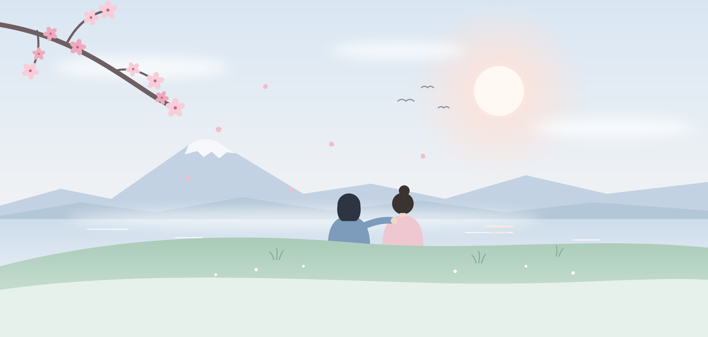

self_care自我照顧
2026年10月25日
美玲：陪伴者的日常
美玲•照顧者
家人患病之後，我先學懂照顧一個人之前，也需要照顧自己。
閱讀全文 arrow_forward陪伴不代表一個人承擔所有。照顧者的心聲、疲累與小小的喜悅，都值得被聽見。
家人患病之後，我先學懂照顧一個人之前，也需要照顧自己。
閱讀全文 arrow_forward
相入面不只是病，還有笑容，也有一直被忽略的日常。
閱讀全文 arrow_forward
三位照顧者分享如何在同行小組中找到資訊、空間與支持。
閱讀全文 arrow_forward
以前我覺得，說累就是不夠愛他。後來社工告訴我：承認自己累，才可以走得更遠。
閱讀全文 arrow_forward
她狀態不好的時候，我們就一起煮一碗簡單的麵。不用說太多話，在同一個空間裡，已經是一種陪伴。
閱讀全文 arrow_forward